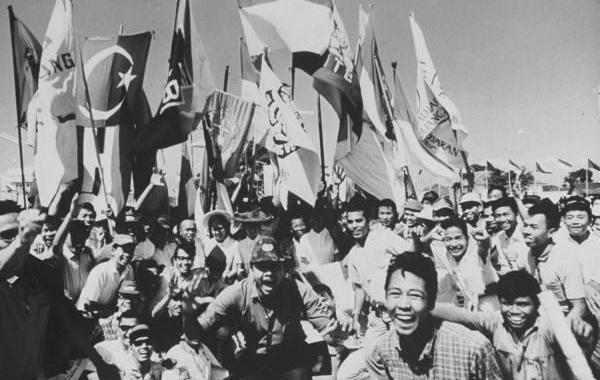

|
回目录 回主页 |
（今年又到了9月30日，以此纪念震惊全球的“9·30”事变） 印尼事变与华人（1）起因1965年9月30日，印尼发生了当地共产党政变事件，使中国的“输出革命”政策遭到一次惨重的挫败。印尼，历来被称作宗教宽容之国，不同民族、不同宗教的通婚在那里很平常。印尼从民间到政府所信奉的社会准则，与共产主义的“意识形态”格格不入。从50年代起，中共向印尼投下最大赌注，试图拨转印尼的国家政治方向：拉拢苏加诺，向印尼提供经济援助，扶助印尼共产党（PKI），操纵华人配合印尼共党的“革命运动”等等。据说周恩来在一次内部讲话中称：东南亚有这么多华侨，我们有条件通过这些华侨使东南亚改变政治颜色。 利用华人在侨居国进行共产主义颠覆活动，是60年代中国向东南亚“输出革命”的重要手段。中共的海外活动规则是“职业外交听从革命外交的领导”。驻外的中国使馆掩护和配合当地国的中共地下党开展活动，中共地下党的秘密活动则以“中国使馆”为招牌和面具。在东南亚诸国活动的中共地下党归属中共“东南亚情报基地”领导，该基地设在印尼首都雅加达。一些消息说，该基地负责人是中共“对外联络部”（中共的对外颠覆机构）的干部李某，他的掩护身份是中国驻印尼使馆的“一等秘书”。 在二十世纪50年代，东南亚华人的普遍态度并不亲共。中共若利用华人，需要施展阴谋。在中国驻外使馆里，有一些以外交身份为掩护的人员，专门从事在当地国华人圈里进行渗透，暗组地下党。他们的策略主要是： 一，以给予生意便利或虚荣名誉的好处，贿买海外华人的民间社团首领，使华人社区变成可受指使的工具，对海外“华校”更是如此。 二，“收买”一些进入当地主流社会的政界、科技界、商界等领域内的海外华人，给他们以某些小利益，并展示给其他华人看，起到带动作用。 三，物色一些贪图小恩小惠而无道德意识的海外华人，作为中共在海外活动的基础。中共称他们为“爱国华人”。那些“爱国华人”的通常做法是：自己拉拢几个人，参与某个同乡会或者什么小团体；然后去向中国领事馆表忠心求领养，然后自己任命自己是“侨领”。之后就可以有中共方面的小恩小惠了。 四，拉拢海外华文媒体，主要是华文报刊，以此来影响华人群体的政治倾向。对于任何一份独立的华文报刊或媒体，只要它有较多读者观众，中共都设法施加影响。通常，人们只要看看华文媒体的内容和倾向，便可知它是否有中共的影子或者被中共所操纵。出现在亲共的华文媒体上的虚假信息常被中共以“国外报导”的名义转述给国内人民。 为把华人群体从当地国人民里分离出来，中共使用的手法之一是挑唆离间华人与当地人、当地国政府的关系，使华人失去融洽的生存环境，最常用的套路便是煽动“华人受歧视”，所以人们一看到这种煽动便可知其背后必定有中共势力的操纵。中共认为海外华人处境越孤立就越使华人不得不依靠所谓的“祖国”势力，从而能够被中共所利用。这在印尼已经取得了经验和成功，在缅甸、马来西亚、泰国也有望成功。 此外常见的中共的海外宣传是“中国强大了，华人才会有尊严”，“华人要靠祖国才能在海外生存”等等。众所周知，华人的“祖国”是指他们的祖先创造和延续几千年的传统文明意义上的中国，并不是现今的中共政权统治下的“中国”（中华人民共和国）。但海外华人常把“中国”与“祖国”这两个不同概念划上等号，这种错位现象对于现代人来说是很难理解的。中共则充分利用这种错位意识，诱导华人把“爱祖国”与“支持中共政权”等同起来，以便最大限度地利用华人。那些“爱国华人”逐渐在华人圈里形成亲共势力。如果这种势力不受抵制地蔓延，最终会把一些华人社团变成被中共操纵的“第五纵队”（潜伏的敌对势力）。 在印尼方面，60年代，苏加诺总统加速倒向共产阵营，印尼共党的势力加速蔓延，华人社团的“革命”活动也越来越肆无忌惮。印尼社会弥漫着一种吊诡气氛，印尼共党的蓄谋和华人的不轨行为倍受疑惑。2004年有一份资料披露：当年中国使馆和印尼共党主席艾地之间的秘密联络员之一，就是现今北京侨联成员、北京市旅游局车队的一位化名“张华”的印尼华侨，此人是中共扶植印尼共党进行“革命”动乱的证人之一。 进入二十世纪60年代以来，整个东南亚，共产党制造的动乱已是风起云涌。印尼在遏制共产主义蔓延的亚洲格局中占有重要位置。然而，印尼共党渗透进印尼国家的方方面面，已是印尼总统苏加诺在国内的依靠力量，而中共也成为苏加诺在国外的呼应力量。印尼落入共产党手中的危险性遽然加剧，但苏加诺却采纳印尼共党势力来遏制印尼的民主势力，还不断强调要防范西方民主国家的“新老殖民主义和帝国主义的颠覆活动”。 印尼共党主席艾地（Dipa Aidit）在1965年公布的印尼共党势力和外围组织如下：印尼共产党300万人，共产青年团200万人，妇女会200万人，工会500万人，农民协会1,000万人。总计2,200万人。 从1965年初，印尼共党便试图染指国家军事系统。艾地向苏加诺提出把印尼共党所操纵的势力武装起来组成“第五兵种”（印尼现有四个兵种是国家的陆、海、空军和警察）的建议，引起印尼军方的警觉。1965年3月苏加诺改组内阁，撤换内阁中抵制共产主义的成员，使印尼共党的势力进一步在国家中枢层面得到膨胀。5月，苏加诺多次宣称：“没有共产党帮助，印尼永远不能成为第一流的大国”，“我是共产党的朋友，因为共产党人是革命者”，“我把印尼共党看成是我的兄弟”等等。苏加诺的亲共政策激起了印尼社会的普遍不满，然而这并不能使共产党真心待苏加诺为友。 大部分印尼人民意识到自己国家的安全正受到共产主义的严重威胁，而印尼军方确认这种威胁在内部来自印尼共党和华人，在外部来自共产党中国。印尼社会到底会被什么人主导走向哪里的问题，已经失去循民主程序的选择机会，因为印尼共党不给印尼人民这样的机会，他们首先动手，在1965年9月底发动了强夺政权的“9·30政变”，企图一举实现共产党统治。 9月，印尼共党份子、苏加诺总统卫队中校翁东（Untung）等人与某些亲共军人合伙密谋军事政变，准备绑架和杀害印尼军方的主要将领和夺取政权。9月30日夜，在苏加诺的默许下，翁东等人开始行动。7辆卡车满载身穿总统卫队服装的武装士兵从哈林（Harlem）空军基地出发，深夜来到首都雅加达，对印尼“军事委员会”7名最高级成员的寓所实施袭击。印尼陆军司令等6名将军被绑架杀害，印尼国防部长纳苏蒂安（A. H. Nasution）只身翻墙逃匿，他的小女儿及家人被当场枪杀。与此同时，印尼共党发动叛乱，占据了国家电台和其它要害部门，暂时控制了雅加达，史称“9·30政变”。苏加诺当然知情，他对残忍杀害7名印尼将军一事的看法是：“在革命过程中发生这样的事情是很自然的。”天亮后，翁东等人宣布成立由45人组成的印尼“革命委员会”来取代总统内阁，接管国家政权。翁东等人并没有将苏加诺加纳入“国家革命委员会”之内，表明了印尼共党实际上不与苏加诺站在同一阵线甚至根本不是朋友。此时，印尼共党在各地的组织和潜伏在军队中的同党都异常兴奋做出策应行动，准备接管当地政权。国家顿时陷入混乱。 “9·30政变”是印尼共党卸下“合法政党”的面具而转为叛乱组织的关键一天。至此苏加诺才明白印尼共党原来是在夺取国家政权。这虽然出乎苏加诺的意外，但此刻他仍在庇护政变者。10月1日上午，印尼陆军战略预备队（预备役组织）的长官苏哈托（Suharto）少将，得知7名将军遭到绑架杀害和国家面临危难时，愤然出头要求召集陆军参谋部会议。苏哈托在军队系统中的军阶低，而且手中无兵，但他仗义执言，严厉斥责翁东等人“发动政变，用暴力手段夺取国家政权。这些肯定是印尼共党策划的。”参加会议的陆军将领众怒一致，决定奋起反击印尼共党谋害国家的阴谋，他们公推苏哈托展开反击，赋予他陆军指挥权。于是苏哈托迅速调动陆军开进首都，当天傍晚就控制了雅加达的局势。10月2日晨，苏哈托指挥陆军部队攻占哈林空军基地，逮捕了翁东等政变者们。10月3日凌晨，沉默两天之久的苏加诺见到印尼共党的政变大势已去，尴尬露面向全国发表广播讲话，貌似中立地号召“避免武装冲突，寻求政治解决”。他不得不承认苏哈托行动的正当性，同意苏哈托负责恢复印尼的治安和秩序。至此，以苏哈托为代表的印尼军方一举挫败共党，挽救了印尼的国家命运，苏哈托从此独裁当政长达32年。给印尼引来祸水的苏加诺被人民所唾弃，苏加诺的助理说：“可以认为始自1965年10月1日，苏加诺时代终结了。” 印尼事变与华人（2）清共在挫败了印尼共党的政变后，印尼人民对共产党的愤恨，集体爆发了。他们团结一致，自发清剿印尼共党。印尼共党处于全国民众的搜捕之中，党组织顿时土崩瓦解。10月8日，在雅加达召开50万民众的大集会，宣布印尼共党为非法组织，浩浩荡荡的民众焚烧了印尼共党总部，该总部里所有的人，包括党主席艾地已不知去向，从这天起印尼共党永远消失了。世界史上空前的“清共”运动随之拉开序幕。苏哈托以“恢复治安行动最高司令官”名义，命令首先从政府各机关和军队中清除共党分子。苏哈托在总结“9·30政变”事件时指出：“印尼共党在1948年玛利芬（Madiun）暴动时全党几乎覆没的情况下，能在短短的十年内再次成为庞大的祸害势力，主要原因是政府在玛利芬事件后没有大规模地连根拔除共党和它的同路人。漏网的、轻判的、末得到改造而被释放的共党分子太多了，使共党很快复生，能够在1965年又来一次‘政变’，这是未彻底铲除共党的错误政策所引起的。印尼这次必须吸取教训，不能重犯错误，一定要彻底、不留情地全面铲除共产党。”由此，印尼人民开始了全国“清共”运动。

据印尼方面的粗略统计，从1965年底到1966年中期，约50万人被捕，25万共党分子被杀，包括艾地在内的印尼共党领导人全部被捕获杀掉。而国际上估计的数字要大得多，流传的最高数字是《伦敦经济报》采取印尼大学生的估算，说被杀达100万人之多，即爪哇80万人，苏门答腊及其它岛屿各10万人。这次印尼的“清共”被称为世界上最严重的大屠杀之一。被杀者除了共党份子，还有一些共党家属和追随者，这些人的“革命活动”早已被印尼民众冷眼记在心中。印尼政府要求美国使馆大量提供印尼共党分子的详细名单，但美国只是谨慎地提供了一份共党骨干分子的名单。在很久之后的2001年夏，美国国务院根据解密文件出版了《美国外交政策》（Foreign Relations of the United States）报告，其中引述原美国驻印尼使馆政务官员马腾斯（Robert J. Martens）的证词：他的确向印尼政府提供了印尼共党分子的名单，这些名单上的人都是在印尼共党机关报公开刊登的印尼共党领导人，第一份名单78人，第二份名单18人，第三份名单80人，第四份名单39人，总计215人。这个事实说明，美国支持印尼“清共”，但美国并不鼓励对印尼共党的大屠杀。杀掉共党分子，是印尼民众和军队的自发行为，而当时的印尼政权允许民众和军队发现多少共党分子就捕杀多少。因此印尼各地民众，尤其是民间社团和回教（Islam）组织以很高的积极性自行“清共”（注：伊斯兰教与共产主义势不两立），以致稍后政府不得不对共党分子予以分类，限制滥杀。但是在万众一心、切齿痛恨的情况下，印尼共党遭到全面围剿的局面无可避免。一些印尼人，包括纳苏蒂安将军，以亲身经历在回忆录中谈到：
图片：1966年，印尼雅加达的反共青年聚会 “在中爪哇（Central Java），很多平民自行捕杀共党分子，但陆军大致上还控制着屠杀不使过分。在东爪哇，捕杀共党绝大部分由平民施实，主要是回教的安梭（Ansor）青年团。他们认为杀共党和左翼分子是伊斯兰宗教对共产主义的一场歼灭战，杀共党很有自豪感。”一位印尼军官描述说：“东爪哇约有三千个小村落，每个村落都有共党分子或外围分子，民众会杀掉10-15个人。这样计算东爪哇的全部村落就有3万到4万共党被杀。”克地利（Kcdiri）区是杀共党最多的地区之一，有上千名共党份子被杀，因为那里是被共党政变所杀害的6位将领之一苏多佐（Soetojo）的家乡。当地的回教毛拉公开说：“他们（共党）罪有应得是完全合理的。”克地利附近的班兰达司河（Brantas）里漂着一堆堆尸体，为了防止浮尸从河里流入稻田的灌溉渠，村民在渠口打下竹筒桩让水流过但不让浮尸流入。河的下游浮尸太多，河两岸的村民都不敢吃鱼，因为鱼肚里有人的手指或者腐烂的人肉。不少村落向当局投诉河里的浮尸太多已经威胁到村子的卫生环境。 巴厘岛（Bali）是旅游区，有人口200多万，居民信奉印度佛教而不是回教，然而居民同样愤恨共党。苏哈托下令部队进入巴厘岛恢复秩序。有军人说：“在巴厘岛我们要压制人民，使他们不要越限（杀共党）。”巴厘岛的整个乡村都在自发清洗村内的共党分子。乡民们把共党份子集中起来，用木棍打死或用刀刺死。每个村庄都有杀村里共党份子的事迹。一个村长说：“在我们村里，村民都以杀共党为光荣。一个乡村如果没有杀死过共党，大家就会觉得耻辱。”巴厘岛经过两个星期的“清共”，约有8万个共党分子的尸体被丢入坑里。巴厘岛传统风俗对下葬仪式是很重视的，但死这么多人根本没有时间举行仪式，一部分尸体就被扔到海里。 苏门答腊的“清共”在军官克马依德利斯（Kemal ldris）的领导下进行得很坚决。“9·30政变”时他听到7位将军被绑架杀害，就认定是印尼共党在起事。他联络军部，但联系不上，就率十几人乘三辆吉普车急驶到棉兰（Medan）。起程前，为了防止共党有所行动，他命令部下戒备，四处巡逻，把图谋不轨的“疑犯”和亲共的人先抓起来。他自述道：“我吩咐部下抓共党，最初是叫他们在驻地5公里的范围内肃清共党。过后我联系了苏哈托，他批准我可用我指挥的部队去肃清整个地区的共党”；“我下令抓捕所有的共党分子，立即执行清洗。军队内部也有不少共党分子，清洗工作连续三日三夜才完成。”因他清除共党最为卖力，苏哈托调他到首都让他指挥“清共”。祸首苏加诺在1965年12月18日黯然说：“印尼共青年团员，印尼农民协会的人，印尼共党员，到处都被杀，尸体留在路两旁的树底下或被丢入河里漂流，无人过问。” 大量证据表明中共不仅策动印尼的赤化，还直接涉及了“9·30政变”阴谋。“由于中国明显地与这次事件有严重牵连，也由于死亡人数太多，北京的声誉马上遭到极其严重的损害。中国在印尼的革命政策彻底失败了。”而为中共效力的印尼亲共华人，原先“每到10月1号（中共建政日）华人家家户户都插上五星红旗（庆贺中共政权）”的他们，现在轮到付出代价了。印尼各地自发掀起了清除华人社区亲共势力的高潮。印尼人民认定亲共华人是印尼共党的帮凶和中国部署在印尼的“内奸”，严重危害着印尼的国家利益和民族安危。所以，印尼的民众、回教组织都恨透了平日里“闹革命”跳得欢的那部分华人，这就是印尼人民“排华”的真实背景。民众在“清共”中铲除亲共华人，也是在印尼被杀人数大增的重要因素。仅有少数的中共地下党人经过预设渠道逃回中国大陆，大量的“爱国华人”却没有渠道逃离印尼，他们极其恐惧又无路可逃，印尼民众蜂拥而至，破门拿人，捣毁住宅，将那些亲共华人刀砍棍打，横死街头。亲共的华人社团被焚烧，订“爱国公约”、唱“革命”歌曲、看“革命”书报的华校逐个被砸烂，牵连到许多的安分守己的华人商铺也被劫掠。一时间华人社区哀声遍地，惨不忍睹。华人们经历几代辛劳在印尼建立的经济基础和社会地位被摧毁了。印尼新兴的民族工商业阶层支持“排华”风潮并取代了华商在城市和小镇的经济地位。一份采访报告说，普通的印尼人对此的看法是：“这是我们的土地，为什么让华人来剥削我们。”在“清共”中，华人被杀数目估计有10万。尽管各种数字有出入，但印尼华人大量被杀，华人群体遭到巨大伤害，事实无可置疑。那位在雅加达中国使馆和艾地之间联络的张华，及时逃入中国使馆才躲过死亡，中国使馆在混乱中设法把这位知情人转运到中国大陆。直到那段历史尘封35年之后，他才向亲友透露他当年的联络员身份并讲述印尼“清共”之事，他说：“听了毛主席的话，在印尼一下子就死了十几万华人华侨。” 在印尼，许多并不是共党分子但与共党活动有关联的华人，也被赶出家园，流落于山地丛林。直到几年后印尼人民抵触华人的情绪逐渐减低，这些华人才被允许回归社会。2001年印尼华文“千岛日报”报道了加里曼丹（Kalimantan Island，也译作婆罗洲Borneo）山中一群华人的生活：1965年印尼“清共”，该地的华人社团曾为印尼共党游击队提供后勤和掩护，被印尼人认为是共党的支持者。当地人说：“用毛泽东的话，共党游击队和这些华人是鱼和水的关系，现在我们把水掏干，看游击队还能不能活。”本来当地人和华人的关系良好，当地人信奉的印度教也与华人信奉的佛教同宗同源，但因为政治因素，这些华人被赶到深山里。如今他们在那里已经生活了40年，他们的窘况让人感到震惊和悲哀：那地方是路途难走的沼泽地带，很潮湿；他们的草屋破烂，下雨时只能找没有漏水的墙角蹲着过夜。地点偏僻，只有一条6公里小路通到那里，有个人走进去就会引起附近山民的注意。曾有位华人去那里拜访他的亲戚，当地山民以为他是带钱给山里的亲戚，这个亲戚被山民杀死，但山民并未找到任何钱。 印尼事变与华人（3）后果现在，可以清楚看到：印尼华人所说的“中国造出了原子弹，我们华人才可以扬眉吐气，印尼人看我们的眼光一下子就变了”，事实上只是一个幻觉，印尼人民并不惧怕有原子弹的“中国”，华人没有扬眉吐气反而是身陷绝境，他们自掘墓而制造了一场相当可耻的悲剧——印尼华人的祖先信誉和族群命运全都被这群奇怪的“爱国华人”所葬送。尽管印尼“排华”激烈，但那些安分守己、从不参与亲共活动的华人很少被伤害，这是几百万华人至今定居印尼而不愿回中国的主要原因。中共那样“输出革命”，符合它的历史角色。但海外华人并无历史角色而没有必要涉入政治活动。 在印尼共党被全面铲除之后，为遏止中共继续利用华人“输出革命”，印尼政府取缔了所有的华文学校、华文报刊及华人社团。迄今，绝大部分华人子弟已不会说华语。印尼政府先后颁发了限制华人文化及宗教生活的法规，内容包括华人改用印尼姓名，禁止舞龙舞狮等中国式的文化活动，像严防毒品一样禁止中国大陆的书报进入印尼。华人在办理子女入学或官方申请时也必须出示公民身份，使得当年受中共挑唆而拒绝印尼国籍的那些华人失去了社会权利。华人终于弄懂了中共政权不能依靠，他们一窝蜂地抛弃中国而加入印尼国籍，赶忙撇清自己与中共的关系。1967年印尼成立“处理华人事务特别小组”，负责推行同化政策。1968年在一些台湾人的出头交涉和推动下，印尼始准许华人在政府监管下开办小型的华文学堂。 中国方面绝口不提印尼“清共”的起因，而指责印尼“排华”，把所谓的“中华民族”扯进来当作挡箭牌。观察几百年来华人移民印尼的历史，可知现今的印尼“排华”风潮正是印尼人民的反共情绪和抵触中国情绪的混合物。印尼人民并不排斥台湾华人或新加坡华人、马来西亚华人，而专门排斥中国大陆华人，此中的缘故很清晰。 1965年印尼人民发起“救国”运动，彻底摧毁了印尼共党，印尼也从东南亚最亲共的国家一举变为全球最坚定的围堵共产主义扩张的强硬堡垒。而印尼对抗共产主义的方式过于血腥，也遭到民主阵营的广泛责备。印尼政局稳定后，政府很快把重心转向经济建设，苏加诺的“社会主义”弊端被全部切除，政府把许多当年被苏加诺政权强行“国有化”的民间企业归还，大力促进自由经济的发展，鼓励大米生产和能源及其他资源的开发，实行对外开放政策，引进先进技术。以美国为首的“援助印尼国际财团”提供了大量援助。1969年印尼经济进入良性循环，国民生产总值年增长率一直在7%～10%之间，远远超越了苏加诺时代的经济停滞。 一份未经证实的资料说：“1965年印尼发生政变前夕，中国驻印尼大使紧急回到北京汇报情况。李某（中共在东南亚颠覆活动的负责人）以使馆一秘身份成为‘李代办’，暂管使馆业务。1967年，中国使馆受到印尼示威群众的包围，印尼政府宣布‘李代办’为‘不受欢迎的人’。李某从送到使馆来的华人护照中，挑选了一份，换上自己的照片，然后上了飞往泰国曼谷的飞机，逃出印尼。泰国监视着与中国有关的往来人员，李某一到泰国就被认了出来。而印尼的中国使馆人员正在惶惶不安的时候，发现‘李代办’已不知去向。使馆的三秘姚登山出头组织馆员护馆，成了红色外交‘勇士’。李某落入泰国警方之手，中共方面也知道了他的下落，便通过特殊管道与缅甸联系，要把他弄回中国。当时中国与缅甸的关系微妙，既维持着表面关系，又扶植‘缅共’的武装颠覆活动。缅甸方面提出交换条件，中共只好答应了降低对‘缅共’的支持程度。缅甸与泰国有着盟友渠道，终使泰国把李某驱逐到缅甸，再被缅甸送给中国。然后李某被置于中国湖南某地审查，评估他对东南亚的中共地下党网络造成了多大程度的破坏。” 在印尼华人华侨无处可逃、嗷嗷求救的时候，那先前一直在策动华人“闹革命”的中共，现在又是怎样援助急需救命的同胞的呢？ 中共的立场是立即冷漠抛弃。当印尼“清共”屠杀蔓延到华人时，中国有理由去保护侨民，但中共不敢负起责任，加上实力达不到国土之外，致使中国象个局外人一样地退缩了，只采用表面抗议而实际无所作为。中国最后派船仅仅接回四千名印尼华人，抛弃数百万印尼华人任由他们在血雨腥风中挣扎。1966年印尼的“排华”活动达到高潮，中共依然软弱被动，不予回应。这似乎在向世界宣告：东南亚华人是一群无主认领的海外贱民。 此后有台湾媒体对一位印尼华人的访谈，展示了印尼华人的普遍困惑，“他叹口气答道：‘1965年的9·30革命政变失败后，印尼人民要抓共产党，因为中国大陆方面是印尼共党的后台，所以很多大陆华人被杀，华校被关闭。我的侄子侄女当时参加一个（亲共）华人团体，很多成员都被抓，我们赶紧设法将（侄子侄女）他们送回中国大陆。’隔了半晌，他又叹气道：‘他们回中国大陆后也不得好，文化大革命时被戴高帽游街斗争，说华侨都是反动华人，在国外活不下去才回来的！’” 这些生活于中国阴影下的华人，印尼人民将他们视为内奸和反贼，而中国大陆人民又将他们当作“海外敌人”，这世界究竟有什么地方可以容纳这些“输出革命”的施害者兼受害者？ 中国在印尼失败得很彻底。1962-1965年之间中国拉拢发展中国家以推动“革命”的政策，也同样失败了。毛泽东认为自己虽然无望担当国际共运领袖，但还可以担当“第三世界”的领袖。这得到中共“务实派”的支持，因为他们希望毛泽东致力于“输出革命”而不再折腾内部。中国不断给“第三世界”国家的“革命组织”提供武器金钱和颠覆训练；另一方面刘少奇、周恩来等人多次分别游走亚洲非洲国家，假扮“亲善”。结果是，除了很少数国家对中国做出表面称赞之外，绝大多数国家更加警惕中国，使中国在“第三世界”的形象迅速破产。 历史的教训是，中共的意识输出祸害了海外华人。在今日，如果海外华人继续被中共利用，不仅会导致印尼再次排华，也会导致将来的全球各国都排斥华人。 作者：宋征 |
回目录 回主页 |